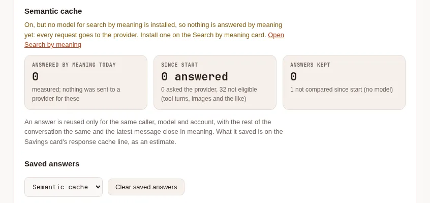
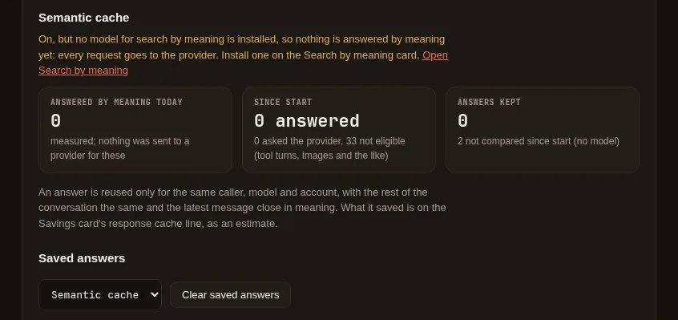

The proxyFeatures10 min read
The semantic cache #
On this page
The semantic cache lets the proxy answer a question it has already answered, worded differently, without asking the provider again. "How do I reset my password?" and "how can I reset my password" get the same answer, and the second one costs nothing at the provider.
Off unless you turn it on
With no semantic_cache: block in config.yaml, nothing changes: every request goes to the provider exactly as
before, and no header is added.
In plain words #
- What it is. When a new question means nearly the same as one the proxy answered a moment ago, for the same person, the same model and the same conversation, the proxy returns that earlier answer.
- Why you want it. Help desks, documentation bots and scripts often ask the same thing in many ways. Each repeat answered by the proxy is a request the provider never sees.
- Why you might not. The answer is the earlier one, not a fresh one. Two questions can be close in wording and still need different answers ("enable" and "disable", say). Turn it on where a near answer is fine, keep the threshold high, and leave it off for coding agents, whose turns are tool calls the cache never answers anyway.
- Who sees whose answers. Only the same caller, on the same model and provider account. Never across people or teams, unless you let one team share.
- How you know. Every answer from it says so in a response header, the usage log marks it, and the setup page's Cache page counts it apart.
To turn it on:
- Install the model that compares questions. On the setup page, Search by meaning, press Download on bge-small-en-v1.5. It is the built-in model for search by meaning and runs on this machine. Without it, every request is simply sent to the provider.
- Turn the cache on, for every model as below, or for some models or teams only (The settings):
YAML
semantic_cache: enabled: onThe proxy picks the change up on the next request; no restart.
- Check that it answers. Ask the same question twice in other words (with no temperature set, or 0), and look for
X-Maple-Semantic-Cache: hiton the second answer, or the Cache page's count.
What it answers, and what it never answers #
A request may be answered from the semantic cache only when all of these hold:
- the same caller asked before: the same access token, or the same kind of tool on this machine (with
share: team, anyone of the same team); for a request a chained proxy forwarded, the same person at the same proxy (a forwarded request that names no person is never answered from it); - the same end user, when your app names one (
end_users, or the request'suserfield); - the same request settings that reach the provider: the output limit, the temperature, the stop sequences,
reasoning effort and thinking. Fields the proxy does not send on to a provider (
top_p,top_k,seed, the penalties,response_format,logit_bias) cannot change the answer, so they are not compared; - the same model, as asked for and as it resolved, on the same provider account;
- the rest of the conversation is exactly the same: the system prompt, every earlier message, the tools offered and the request's settings (the output limit, the temperature, reasoning). Only the wording of the latest message may differ;
- the latest message is plain text from the person, and the embedding model reads all of it (a message too long for the model is never looked up);
- any numbers in the latest message are the same, in the same order: "convert 5 km" never gets the answer to "convert 7 km";
- the two latest messages are at least as close in meaning as the threshold you set;
- the earlier answer is still within its time to live.
It never answers, and never saves:
- a tool turn: a request whose latest message holds a tool call or a tool result;
- a request that asks for tool use (
tool_choiceset to require a tool, or to name one); - a request with images or files anywhere in it;
- a request that asks for a temperature above 0, unless you allow it (
allow_temperature: on) or the client sendsX-Maple-Cache: allow; - an answer that did not finish normally: cut off at the output limit, a tool call, an error, or a stream the caller left before the end.
When the response cache is on too, it goes first: an identical request is answered from it, and only a request it does not have is looked up by meaning.
The settings #
All under semantic_cache: in config.yaml, or on the setup page: Caching & trimming, card Semantic cache. The
form needs a page password (the cache can keep questions in a Qdrant server you name); the Cache page shows what it
answered.
semantic_cache:
enabled: on # every model and caller; or turn it on for some, below
models: [ask-docs] # names as asked for: an alias, a model id or provider/model, with * wildcards
teams: [support] # the teams it is on for
threshold: 0.95 # how close in meaning, from 0.80 to 1
ttl: 1h # how long an answer may be reused, from 1s to 7d
max_mb: 64 # the most it keeps
max_entries: 5000
share: caller # or team
allow_temperature: off
store: auto # auto, local, redis or qdrant| Key | Default | What it does |
|---|---|---|
enabled | off | on turns it on for every model and caller |
models | none | Turns it on for these models only, by the name a request asks for, the model id, or provider/model; * matches any part |
teams | none | Turns it on for the people of these teams |
threshold | 0.95 | How close in meaning the latest message must be, from 0.80 to 1. Higher answers fewer requests, more safely |
ttl | 1h | How long an answer may be reused, from 1s to 7d. A shorter ttl set later applies to answers already kept |
max_mb, max_entries | 64, 5000 | The most it keeps. One caller (an access token, a team that shares, or a kind of tool on this machine; the people behind one chained proxy count as its one token) may fill at most a quarter of it, making room from its own oldest answers first. When the whole cache is full, the caller holding the most makes room. So neither one caller nor several together push a smaller caller's answers out, in every store (the shared Redis counts in bytes, Qdrant in answers) |
share | caller | team lets the people of one team be answered from one another's answers, on the same model and account; never across teams. Only share inside a team whose members trust each other: one member's answer can be returned to another (see the caution below) |
allow_ | off | on lets a request that asks for a temperature above 0 be answered and saved |
store | auto | Where answers are kept: see below. local in storage mode central keeps each replica's in its own memory. A change of store needs a restart |
qdrant.url, qdrant., qdrant. | none, maple_semantic_cache, off | A Qdrant server to keep them in, when store: qdrant. https://, or http:// on this machine; insecure_http: on allows plain http:// to another machine. Its API key, if it needs one, is read from the environment variable MAPLE_QDRANT_API_KEY only |
It is on for a request when enabled is on, or the request's model is in models, or its person's team is in
teams.
share: team shares answers
With share: team, the answer one member was given can be returned to another member of the same team, word for
word. If an answer could hold something only its asker should see, keep share: caller.
A request can steer it with the same X-Maple-Cache-Control request header as the response cache: no-cache (ask
the provider; the new answer may still be saved), no-store (do not save this answer), ttl=<seconds> (keep this
answer at most that long), s-maxage=<seconds> (accept only an answer at most that old) and namespace=<name> (a set
of answers of its own).
Where answers are kept #
- One proxy (disk mode, the default). In the proxy's memory, and in one file in the config folder,
semantic-cache.bin, so a restart keeps them. The file is encrypted with a key only this install has, readable by you alone, and a file that was changed is not used. - Several replicas (storage mode central). In the shared Redis, encrypted with
storage.encryption_key, so every replica answers from what any of them saved. See Kubernetes. - Qdrant (
store: qdrant). On your Qdrant server. Qdrant holds each question's vector, which it compares; the answers themselves are encrypted before they leave the proxy.
The questions' text is not kept, only their vectors and the answers.
Treat the store like the usage log
A vector still says something about the question it came from. Protect what the cache holds as you protect the usage log: the file, the Redis and above all a Qdrant server, which holds the vectors unencrypted.
Forget saved answers #
- On the setup page: the Cache page, Saved answers, choose a cache and press Clear saved answers.
- In a terminal:
maple-proxy cache clearforgets the answers of both caches;--semanticor--exactonly one;--team <id>only the answers a team shares,--caller <token id>(orlocal:<tool>) only one caller's. With no proxy running, it deletes the semantic cache's file.
A clear reaches every store: this proxy's memory and file, the shared Redis and the Qdrant server. One clear runs at a time. Each clear is recorded in the proxy's audit log (which cache and whose, never an answer). The offline file delete is for disk mode only; in storage mode central, clear through a running replica. Turning the cache off and restarting also removes its file. In storage mode central, every replica is told and clears its own memory the same way, within seconds.
What a client sees #
Every request the semantic cache is on for says what it did, in the response header X-Maple-Semantic-Cache:
hit; similarity=0.973: an earlier answer, to a latest message that close in meaning (0 to 1). The answer reports no tokens and no cost, since nothing was sent to the provider, andX-Maple-Cache-Responsesayssemantic-hit;miss: sent to the provider; the answer may be saved;bypass: not a request it answers (a tool turn, images, a temperature above 0, a caller it cannot tell apart, or the embedding model was not available).
Streamed requests get the same headers, and a saved answer is streamed back in the same shape.
What it saves, honestly #
- An answer from the semantic cache costs no AI units at the provider: the usage log records it with zero tokens and zero cost (measured: nothing was sent).
- What it saved is valued at what the original request cost when it was first answered, and shown on the Savings card's response cache line as an estimate. The new request might have been shorter or longer; the proxy cannot know what it would have cost, so it never claims more than the original's recorded cost.
- Comparing questions runs the embedding model on this machine's CPU. That costs no AI units, and a little time on each request it is on for.
The usage log marks every such line: cached_response is true, response_cache_kind is semantic, and
semantic_similarity is how close the question was. See the usage record schema.
On the setup page #
The Cache page counts the requests answered from Maple's caches today, with those answered by meaning apart, and,
while the semantic cache is on, its own figures since the proxy started: answered, asked of the provider, not
eligible, and how many answers it keeps. maple-proxy cache prints the same count. While no model for search by
meaning is installed, the card says so first, with a link to the Search by meaning card: every request then goes
to the provider. What's set up marks the semantic cache as needing attention for the same reason.


When something goes wrong #
- Every request says
bypass. No embedding model is installed, or the request is not one it answers (see the list above). Install the model on the Search by meaning card. - No hits, only
miss. The questions differ in more than wording (another system prompt, an earlier message, another setting, other numbers), or they are not close enough: try a lowerthreshold, carefully. - A wrong answer was returned. Raise
threshold, shortenttl, or turn it off for that model. A client can sendX-Maple-Cache-Control: no-cachefor a question that must be asked fresh. - The Qdrant server is down, or the embedding model fails. Requests go to the provider as usual; the proxy leaves the store alone for half a minute (the model for ten seconds) before it tries again.
Not yet verified #
The cache's behaviour is tested with a stand-in embedding model, a stand-in Qdrant and an in-process Redis. Not yet run: real questions through the built-in model (how often near questions match at a given threshold), a real Qdrant server, and a real Redis. Choose the threshold on your own traffic.
See also #
- Proxy settings: Caching The exact-match response cache, which is checked first.
- Search by meaning The built-in model the cache uses to compare questions.
- See what you saved How savings are estimated and shown, and what they never claim.
- Run the proxy on Kubernetes Several replicas sharing one cache through Redis.